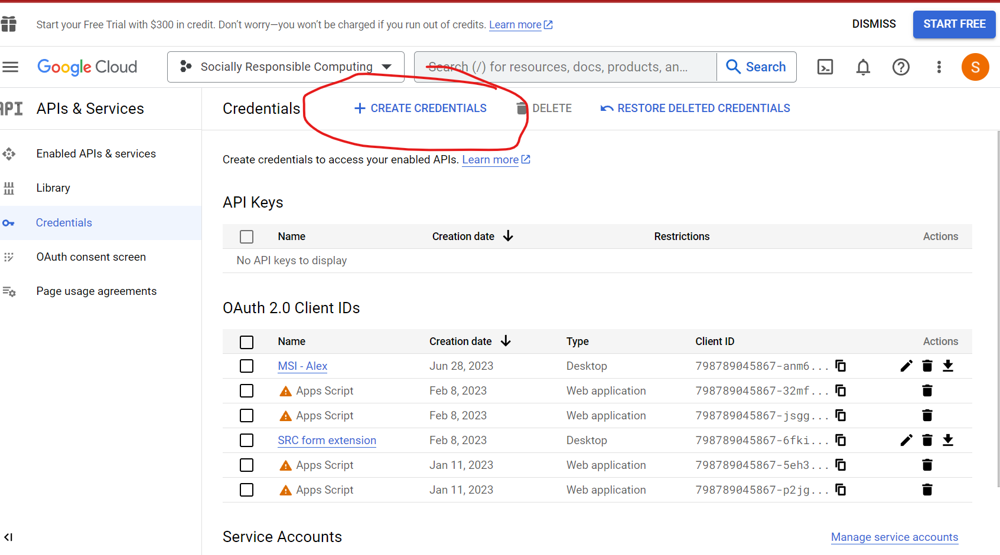

This is a Google Forms extension that uploads documents to a repository on submission of a form. The user should fill out the form and include their documents and upon submission the information and the document will be version controlled on an external Github repository
This guide will walk you through the setup process for creating a Google Form extension using Google Apps Script and CLASP. The extension allows you to add custom functionality and automation to your Google Forms.
Before you begin, make sure you have the following prerequisites installed:
npm install -g @google/clasp
Clone the project from github
git@github.com:SociallyResponsibleComputing/Form-Extension.git
Login to https://console.cloud.google.com/apis/credentials?authuser=0&project=socially-responsible-computing and create new oAuth2.0 credentials:

Choose desktop Application when it asks you for the type of credentials
Download the credentials as JSON and save it to the root directory of the project. Rename the credentials file to creds.json
Inside the root directory there is a .clap.json file, make sure the root directory points to the path of your cloned directory
Next login using the freshly downloaded creds.json clasp login --creds creds.json
You should now be ready for development. Let's do a test to make sure everything is wokring
https://forms.gle/v9kitcKe45XMQ4SA6
https://script.google.com/u/0/home/projects/1EPqaSsc9UfkhVfQ_C6K4TjRY7PQYY0bvJq-37hcRZB2zg11DcwUzn4cP/executions
https://script.google.com/u/0/home/projects/1EPqaSsc9UfkhVfQ_C6K4TjRY7PQYY0bvJq-37hcRZB2zg11DcwUzn4cP/edit?pli=1
https://console.cloud.google.com/apis/credentials?authuser=0&project=socially-responsible-computing